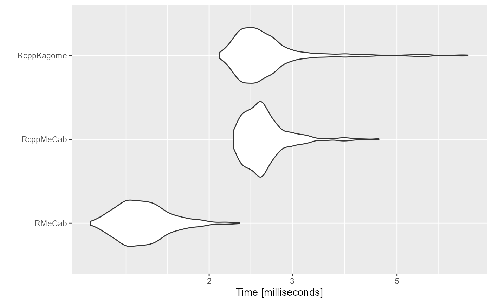

これは何？
Rで形態素解析するためのパッケージです。Pure Goで辞書同梱な形態素解析器として知られるikawaha/kagomeをラップしています。
使い方
形態素解析
character vectorを渡せます。戻り値はリストです。
res <- RcppKagome::kagome("にわにはにわにわとりがいる")
str(res)
#> List of 1
#> $ :List of 6
#> ..$ 0:List of 5
#> .. ..$ Id : int 53040
#> .. ..$ Start : int 0
#> .. ..$ End : int 1
#> .. ..$ Surface: chr "に"
#> .. ..$ Feature: chr [1:9] "助詞" "格助詞" "一般" "*" ...
#> ..$ 1:List of 5
#> .. ..$ Id : int 80172
#> .. ..$ Start : int 1
#> .. ..$ End : int 3
#> .. ..$ Surface: chr "わに"
#> .. ..$ Feature: chr [1:9] "名詞" "一般" "*" "*" ...
#> ..$ 2:List of 5
#> .. ..$ Id : int 58916
#> .. ..$ Start : int 3
#> .. ..$ End : int 6
#> .. ..$ Surface: chr "はにわ"
#> .. ..$ Feature: chr [1:9] "名詞" "一般" "*" "*" ...
#> ..$ 3:List of 5
#> .. ..$ Id : int 53999
#> .. ..$ Start : int 6
#> .. ..$ End : int 10
#> .. ..$ Surface: chr "にわとり"
#> .. ..$ Feature: chr [1:9] "名詞" "一般" "*" "*" ...
#> ..$ 4:List of 5
#> .. ..$ Id : int 19676
#> .. ..$ Start : int 10
#> .. ..$ End : int 11
#> .. ..$ Surface: chr "が"
#> .. ..$ Feature: chr [1:9] "助詞" "格助詞" "一般" "*" ...
#> ..$ 5:List of 5
#> .. ..$ Id : int 6652
#> .. ..$ Start : int 11
#> .. ..$ End : int 13
#> .. ..$ Surface: chr "いる"
#> .. ..$ Feature: chr [1:9] "動詞" "自立" "*" "*" ...結果をデータフレームに整形できます。
res <- RcppKagome::kagome(c("庭に埴輪に輪と李がいる", "庭には二羽鶏がいる"))
res <- RcppKagome::prettify(res)
print(res)
#> sentence_id token POS1 POS2 POS3 POS4 X5StageUse1 X5StageUse2 Original
#> 1 1 庭 名詞 一般 <NA> <NA> <NA> <NA> 庭
#> 2 1 に 助詞 格助詞 一般 <NA> <NA> <NA> に
#> 3 1 埴輪 名詞 一般 <NA> <NA> <NA> <NA> 埴輪
#> 4 1 に 助詞 格助詞 一般 <NA> <NA> <NA> に
#> 5 1 輪 名詞 一般 <NA> <NA> <NA> <NA> 輪
#> 6 1 と 助詞 並立助詞 <NA> <NA> <NA> <NA> と
#> 7 1 李 名詞 固有名詞 人名 姓 <NA> <NA> 李
#> 8 1 が 助詞 格助詞 一般 <NA> <NA> <NA> が
#> 9 1 いる 動詞 自立 <NA> <NA> 一段 基本形 いる
#> 10 2 庭 名詞 一般 <NA> <NA> <NA> <NA> 庭
#> 11 2 に 助詞 格助詞 一般 <NA> <NA> <NA> に
#> 12 2 は 助詞 係助詞 <NA> <NA> <NA> <NA> は
#> 13 2 二 名詞 数 <NA> <NA> <NA> <NA> 二
#> 14 2 羽 名詞 接尾 助数詞 <NA> <NA> <NA> 羽
#> 15 2 鶏 名詞 一般 <NA> <NA> <NA> <NA> 鶏
#> 16 2 が 助詞 格助詞 一般 <NA> <NA> <NA> が
#> 17 2 いる 動詞 自立 <NA> <NA> 一段 基本形 いる
#> Yomi1 Yomi2
#> 1 ニワ ニワ
#> 2 ニ ニ
#> 3 ハニワ ハニワ
#> 4 ニ ニ
#> 5 ワ ワ
#> 6 ト ト
#> 7 リ リ
#> 8 ガ ガ
#> 9 イル イル
#> 10 ニワ ニワ
#> 11 ニ ニ
#> 12 ハ ワ
#> 13 ニ ニ
#> 14 ワ ワ
#> 15 ニワトリ ニワトリ
#> 16 ガ ガ
#> 17 イル イル整形されたデータフレームは次のカラムからなります。
- sentence_id: 文番号（sentence index）
- token: 表層形（surface form）
- POS1~POS4: 品詞, 品詞細分類1, 品詞細分類2, 品詞細分類3
- X5StageUse1: 活用型（ex. 五段, 下二段…）
- X5StageUse2: 活用形（ex. 連用形, 終止形…）
- Original: 原形（lemmatised form）
- Yomi1: 読み（readings）
- Yomi2: 発音（pronunciation）
このうちtoken列だけを半角スペースでcollapseして返す（分かち書きにする）ことができます。
RcppKagome::pack(res)
#> doc_id text
#> 1 1 庭 に 埴輪 に 輪 と 李 が いる
#> 2 2 庭 に は 二 羽 鶏 が いる以下の記事のなかで実際に使用しています。この記事では分かち書きにした文書をquantedaのコーパスとして持っています。
ベンチマーク
RMeCabと比較してとくに遅いということはないはずです。
str_shifttjis <- "キャピキャピ音が高くなってきたら、ほんとに出してくれの合図です！ しっかりここではコミュニケーションとってください"
str_utf8 <- enc2utf8(str_shifttjis)
tm <- microbenchmark::microbenchmark(
RMeCabC = RMeCab::RMeCabC(str_shifttjis, mecabrc = "C:/MeCab/ipadic-shiftjis/mecabrc"),
pos = RcppMeCab::pos(str_utf8),
posParallel = RcppMeCab::posParallel(str_utf8),
kagome = RcppKagome::kagome(str_utf8),
times = 500L
)
summary(tm)
#> expr min lq mean median uq max neval
#> 1 RMeCabC 1.8852 2.12260 3.665439 2.22220 2.36740 686.5150 500
#> 2 pos 2.0177 2.25420 2.627474 2.38080 2.53315 89.4369 500
#> 3 posParallel 2.0127 2.21740 2.431239 2.35960 2.51255 4.3975 500
#> 4 kagome 2.0787 2.38145 2.713483 2.53145 2.72850 12.5825 500
ggplot2::autoplot(tm)
#> Coordinate system already present. Adding new coordinate system, which will replace the existing one.
RとGoの連携について
日本語情報としては以下の記事があります。
この記事はもともとRomain Francois氏（RcppとかrJavaとかの開発にかかわっているスゴい人らしい）が書いたブログ記事を参考にしているものです。
Goにはcgoというコマンドが用意されていて、Goで書かれたコードをC言語から利用するためのライブラリにすることができます。この機能を利用して生成したC言語向けのライブラリをRパッケージから呼び出すことで、いちおうはGoの資産をRから利用することができます。
本来、Cなどで書かれた関数をRパッケージで直接呼ぶためには.Callを使って呼べる状態にするために関数のregistrationという操作が必要になります。この手間を省略するために、RcppKagomeではcgoで生成したライブラリをC++から利用するラッパーを書いて、それをRcppでエクスポートしています。
また、より便利に扱うためにはGoとのあいだに型マッピングを定義するのが望ましいのでしょうが、RcppKagomeではその点については深入りせず、文字列だけを受け渡しするようにしています。参考までに、Goとのあいだに型マッピングが定義されているほかの例を挙げておきます。
セッション情報
sessioninfo::session_info()
#> - Session info ---------------------------------------------------------------
#> setting value
#> version R version 4.0.2 (2020-06-22)
#> os Windows 10 x64
#> system x86_64, mingw32
#> ui RTerm
#> language (EN)
#> collate Japanese_Japan.932
#> ctype Japanese_Japan.932
#> tz Asia/Tokyo
#> date 2021-02-20
#>
#> - Packages -------------------------------------------------------------------
#> ! package * version date lib source
#> assertthat 0.2.1 2019-03-21 [2] CRAN (R 4.0.2)
#> backports 1.2.1 2020-12-09 [2] CRAN (R 4.0.3)
#> cachem 1.0.4 2021-02-13 [2] CRAN (R 4.0.2)
#> cli 2.3.0 2021-01-31 [2] CRAN (R 4.0.2)
#> codetools 0.2-18 2020-11-04 [2] CRAN (R 4.0.3)
#> colorspace 2.0-0 2020-11-11 [2] CRAN (R 4.0.3)
#> crayon 1.4.1 2021-02-08 [2] CRAN (R 4.0.2)
#> DBI 1.1.1 2021-01-15 [2] CRAN (R 4.0.3)
#> desc 1.2.0 2018-05-01 [2] CRAN (R 4.0.2)
#> digest 0.6.27 2020-10-24 [2] CRAN (R 4.0.3)
#> dplyr 1.0.4 2021-02-02 [2] CRAN (R 4.0.3)
#> ellipsis 0.3.1 2020-05-15 [2] CRAN (R 4.0.2)
#> evaluate 0.14 2019-05-28 [2] CRAN (R 4.0.2)
#> farver 2.0.3 2020-01-16 [2] CRAN (R 4.0.2)
#> fastmap 1.1.0 2021-01-25 [2] CRAN (R 4.0.3)
#> fs 1.5.0 2020-07-31 [2] CRAN (R 4.0.3)
#> furrr 0.2.2 2021-01-29 [2] CRAN (R 4.0.2)
#> future 1.21.0 2020-12-10 [2] CRAN (R 4.0.3)
#> generics 0.1.0 2020-10-31 [2] CRAN (R 4.0.3)
#> ggplot2 3.3.3 2020-12-30 [2] CRAN (R 4.0.3)
#> globals 0.14.0 2020-11-22 [2] CRAN (R 4.0.3)
#> glue 1.4.2 2020-08-27 [2] CRAN (R 4.0.3)
#> gtable 0.3.0 2019-03-25 [2] CRAN (R 4.0.2)
#> highr 0.8 2019-03-20 [2] CRAN (R 4.0.2)
#> htmltools 0.5.1.1 2021-01-22 [2] CRAN (R 4.0.3)
#> jsonlite 1.7.2 2020-12-09 [2] CRAN (R 4.0.3)
#> knitr 1.31 2021-01-27 [2] CRAN (R 4.0.3)
#> lifecycle 1.0.0 2021-02-15 [2] CRAN (R 4.0.2)
#> listenv 0.8.0 2019-12-05 [2] CRAN (R 4.0.2)
#> magrittr 2.0.1 2020-11-17 [2] CRAN (R 4.0.3)
#> memoise 2.0.0 2021-01-26 [2] CRAN (R 4.0.3)
#> microbenchmark 1.4-7 2019-09-24 [2] CRAN (R 4.0.3)
#> munsell 0.5.0 2018-06-12 [2] CRAN (R 4.0.2)
#> parallelly 1.23.0 2021-01-04 [2] CRAN (R 4.0.3)
#> pillar 1.4.7 2020-11-20 [2] CRAN (R 4.0.3)
#> pkgconfig 2.0.3 2019-09-22 [2] CRAN (R 4.0.2)
#> pkgdown 1.6.1 2020-09-12 [2] CRAN (R 4.0.3)
#> purrr * 0.3.4 2020-04-17 [2] CRAN (R 4.0.2)
#> R.cache 0.14.0 2019-12-06 [2] CRAN (R 4.0.3)
#> R.methodsS3 1.8.1 2020-08-26 [2] CRAN (R 4.0.3)
#> R.oo 1.24.0 2020-08-26 [2] CRAN (R 4.0.3)
#> R.utils 2.10.1 2020-08-26 [2] CRAN (R 4.0.3)
#> R6 2.5.0 2020-10-28 [2] CRAN (R 4.0.3)
#> ragg 1.1.0 2021-02-15 [2] CRAN (R 4.0.2)
#> Rcpp 1.0.6 2021-01-15 [2] CRAN (R 4.0.3)
#> RcppKagome * 0.0.0.700 2021-02-20 [2] local
#> RcppMeCab * 0.0.1.3-2 2021-02-20 [2] Github (junhewk/RcppMeCab@e1800aa)
#> D RcppParallel 5.0.2 2020-06-24 [2] CRAN (R 4.0.2)
#> rlang 0.4.10 2020-12-30 [2] CRAN (R 4.0.3)
#> rmarkdown 2.6 2020-12-14 [2] CRAN (R 4.0.3)
#> RMeCab * 1.05 2020-04-28 [2] local
#> rprojroot 2.0.2 2020-11-15 [2] CRAN (R 4.0.3)
#> scales 1.1.1 2020-05-11 [2] CRAN (R 4.0.2)
#> sessioninfo 1.1.1 2018-11-05 [2] CRAN (R 4.0.2)
#> stringi 1.5.3 2020-09-09 [2] CRAN (R 4.0.3)
#> stringr 1.4.0 2019-02-10 [2] CRAN (R 4.0.2)
#> styler 1.3.2 2020-02-23 [2] CRAN (R 4.0.3)
#> systemfonts 1.0.1 2021-02-09 [2] CRAN (R 4.0.2)
#> textshaping 0.3.0 2021-02-10 [2] CRAN (R 4.0.2)
#> tibble 3.0.6 2021-01-29 [2] CRAN (R 4.0.3)
#> tidyselect 1.1.0 2020-05-11 [2] CRAN (R 4.0.2)
#> vctrs 0.3.6 2020-12-17 [2] CRAN (R 4.0.3)
#> withr 2.4.1 2021-01-26 [2] CRAN (R 4.0.3)
#> xfun 0.21 2021-02-10 [2] CRAN (R 4.0.2)
#> yaml 2.2.1 2020-02-01 [2] CRAN (R 4.0.0)
#>
#> [1] C:/Users/user/AppData/Local/Temp/RtmpKA1L6c/temp_libpath153c66e17cd5
#> [2] C:/Users/user/Documents/R/win-library/4.0
#> [3] C:/Program Files/R/R-4.0.2/library
#>
#> D -- DLL MD5 mismatch, broken installation.